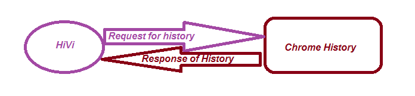

Web Browser History Visualizer
Summary
This project is a Web browser extension that allows the user to visualize in multiple ways his navigation history and the bookmarks. In a world based on communication, the way in which information is presented plays a role as important as the actual content being transmitted.
Contents
Summary
Contents
1 Introduction2 Technologies
3 Arhitecture
4 How does it work?
Conclusions
Bibliography
Introduction
HiVi extension offers multiple manners to visualize the navigation history and favorite local or external web addresses taken from external sources(for example: Pocket).
Graphical representations are generated and exported in PNG, SVG formats and more.
The setup for this extension will be easy to configure. For exemple, the user will be able to exclude some Internet domains or particular URLs in order to not be displayed.
Technologies
The standard technology for generating graphical reprezentations and exporting them in PNG and SVG formats will be through using an API from HighCharts. SVG images and their behaviors are defined in XML text files. This means that they can be searched, indexed, scripted, and compressed. As XML files, SVG images can be created and edited with any text editor, as well as with drawing software. A major modern web browser, Google Chrome have SVG rendering support.
JavaScript is a high-level, dynamic, weakly typed, prototype-based, multi-paradigm, and interpreted programming language. Alongside HTML and CSS, JavaScript is one of the three core technologies of World Wide Web content production. It is used to make webpages interactive
jQuery is a cross-platform JavaScript library designed to simplify the client-side scripting of HTML. jQuery's syntax is designed to make it easier to navigate a document, select DOM elements, create animations and handle events.
HTML5 is a markup language used for structuring and presenting content on the World Wide Web.
HTML5 includes detailed processing models to encourage more interoperable implementations; it extends, improves and rationalizes the markup available for documents, and introduces markup and application programming interfaces (APIs) for complex web applications.
Cascading Style Sheets (CSS) is a style sheet language used for describing the presentation of a document written in a markup language. Although most often used to set the visual style of web pages and user interfaces written in HTML and XHTML, the language can be applied to any XML document, including SVG.
Along with HTML and JavaScript, CSS is a cornerstone technology used by most websites to create visually engaging webpages, user interfaces for web applications, and user interfaces for many mobile applications.
Highcharts is a charting library written in pure JavaScript, offering an easy way of adding interactive charts to your web site or web application. Designed from ground up with mobile browsers in mind, everything from multitouch zooming to touch-friendly tooltips responds great on mobile platforms. In modern browsers graphs are rendered in SVG, with VML support for legacy browsers (e.g. Internet Explorer 6). Highcharts’ fast, mature
Arhitecture
Beside the fact that this aplication is displayed on UI, it is not linked to a database and it can be used offline. The application can be used on mobile devices as well because is very responsive.
How does it work?
The user must click on the icon on the browser toolsbar. The icon looks like in image above.
A pop-up with a button will be displayed to acces the history. This is displayed in the image above.

After clicking on the pop-up button the HiVi will be revealed. The user will have displayed a describing page of the HiVi.

This page relate about what is the purpose of it and has three important linking buttons:
- Describing
- History
- Export
After clicking the second button the user will be lead to his navigation history where he can delete some of his unwanted to be displayed links. Because we all know that "a picture worth a thousand words", we will let you to see how does it works.

The third button will reveal "the heart of the HiVi", the exporting part, where the user can see his main searches exported into SVG or PNG format.

Conclusion
In conclusion, this browser web extension will have multiple manners of displaying the history of navigation. The most interesting thing is that the user will be able to extract all the relevant information in a SVG or PNG file.
A better version of this extension could be to storage in cloud for the user bookmarks.
Bibliography
- http://www.w3schools.com/
- https://www.wikipedia.org/
- https://developer.mozilla.org/en-US/docs/Web/Guide/HTML/HTML5
- http://www.svgopen.org/2003/papers/SVGGraphicRepresentation/index.html
- https://www.highcharts.com